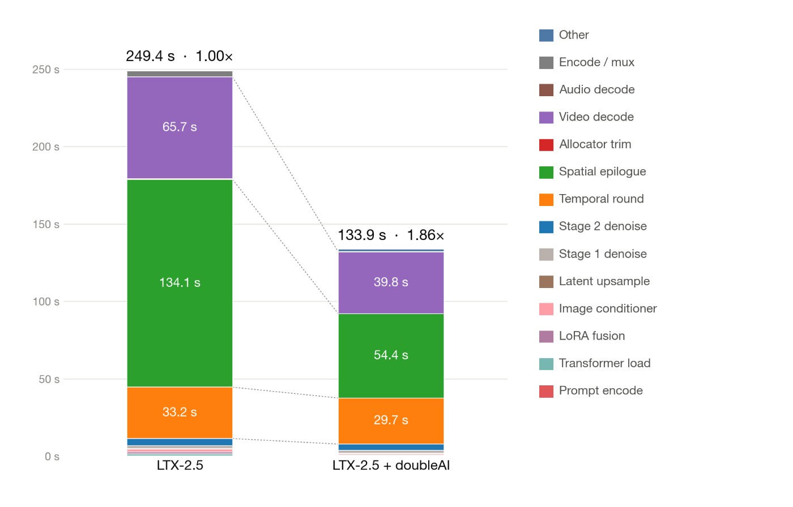

01 · 控制与恢复
本次应记录的是10月19日早期访问公告和LTX技术案例，不是把Maxwell重新描述成今天第一次出现的名字；它在2026年更早已经出现，10月21日转发属于晚刊。doubleAI提出让系统进入运行中的工作负载，识别优化机会，替换机器级实现，同时保持源代码不变。厂商称守护条件不成立时可以回退原始代码。这是一条有明确控制意图的技术路线，但本期没有独立审计实现，也没有复现守护、回退或结果等价的覆盖范围。
doubleAI Maxwell / LTX · 产品 · 早期访问案例
同一项目的完整分析。研究截止为14:00:02Z；来源核验与图片获取在后，不改变事件日期。

本次应记录的是10月19日早期访问公告和LTX技术案例，不是把Maxwell重新描述成今天第一次出现的名字；它在2026年更早已经出现，10月21日转发属于晚刊。doubleAI提出让系统进入运行中的工作负载，识别优化机会，替换机器级实现，同时保持源代码不变。厂商称守护条件不成立时可以回退原始代码。这是一条有明确控制意图的技术路线，但本期没有独立审计实现，也没有复现守护、回退或结果等价的覆盖范围。
旧流程由性能工程师剖析瓶颈、修改内核、调整通信和调度，再反复检查输出与耗时。Maxwell试图在真实运行环境内承担部分搜索和替换工作。LTX案例涉及注意力通信、分块重叠、精度和解码调度，说明收益可能来自多处协同，而不只是把一段代码改写得更短。用户的任务是降低特定生成工作负载的运行时间或资源成本，同时维持可接受的结果。直接替代方案是专家性能工程和现有编译器、运行时优化，不应只拿通用代码助手的编辑速度作为比较基准。
数值必须保留原来的实验边界。厂商报告两张B200生成一个五秒4K片段，从250秒缩短到134秒；这不能推广为所有视频长度、模型或硬件都获得相同比例。音频被描述为位相同，视频则是41dB PSNR，不能合并成整个输出位相同。对视频任务，可接受差异需要由具体使用场景决定，而不是用一个相似度数字替代业务验收。其他工作负载的38倍和4.5倍结果也不能拼到这个案例上。本期没有审计仓库或重跑代码，因此这些仍是厂商案例数据。
控制与恢复要在部署前变成可以观察的行为。工程师需要知道哪条实现被替换、守护条件何时不再满足、回退是否真的触发，以及模型、硬件或输入分布改变后是否要重新验证。保留源代码并不自动意味着所有语义都保持不变，尤其当案例本身涉及精度调整时。部署前提、证明覆盖和价格仍未解决，无法据此计算完整投资回报。总成本还包括搜索、校验、失败排查，以及环境变化后的重复检查；只报一次生成更快，会漏掉这些实际支出。
可证伪的试点应使用代表性输入集，在目标硬件上对比原始路径，记录总运行时间、输出语义或事先同意的差异范围，并主动改变模型或运行条件以观察回退。把优化搜索和校验时间纳入成本，而不是只比较稳定后的单次推理。如果不同输入下出现不可接受的差异，或环境更新后的重新检查吞掉节省，就不应凭单个漂亮案例采用。若实际负载持续更快、结果符合任务标准、失败能可靠回到原路径且总成本下降，运行时优化才从技术展示变成可维护的工程能力。